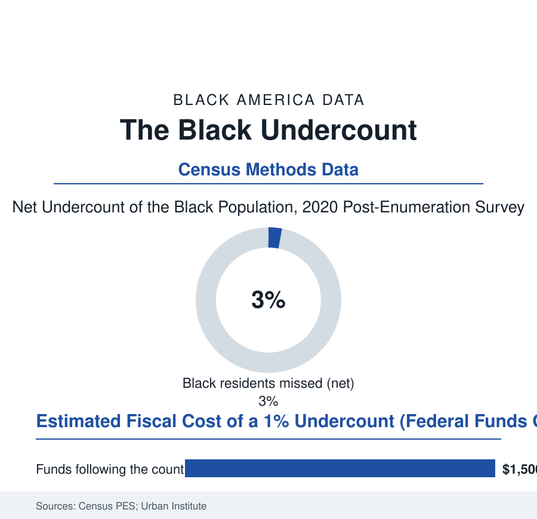

Black Census
Counting the Counters: The Census Undercount File
Every number in this atlas descends from one count — and that count misses Black Americans at a measured rate. The undercount file reads the census's own post-mortems.

This entire reference stands on one foundation: the decennial census and the surveys built on it. The census's own quality check — the Post-Enumeration Survey, which re-counts a sample and compares — has returned the same verdict for generations: the count is good, and it is uneven, and the unevenness has a racial address. In 2020 the Bureau measured a net undercount of the Black population of about 3.3 percent — on the order of a million and a half people, missed net of errors. This article reads the undercount file.
How a Person Gets Missed
The mechanisms are mundane, which is why they persist: the missed live disproportionately in the housing file's complex households (the doubled-up family whose respondent does not list the cousins, the grandfather in the back room, the children split between addresses in the custody file — the household roster question failing exactly where Black household structure is most extended), in the renter's mobility (the form mailed to the last address, the nonresponse follow-up's three knocks at a door that works nights), in the distrust the surveys measure without embarrassment (the count's questions arriving from a state whose other files in this atlas give the respondent reasons, the confidentiality law's ironclad promise competing with lived experience), and in the young-child rows, the census's most stubborn error in every population — the babies and toddlers missed at rates that scandalize the demographers, worst in the Black and renter rows, the under-five undercount stealing a decade of school funding precision from the neighborhoods with the most children. The 2020 count added its own chapters in the Bureau's after-action record: a pandemic moving the count's calendar, the field operations compressed, a late political fight over the count's questions and its deadline conducted in public — and still the PES verdict landed in the family's historical range, the Black undercount a few points, the white population modestly overcounted (duplicates in the second-home rows), the two errors composing the apportionment and funding arithmetic that follows the count for ten years. The stakes' conversion is the Urban Institute's and the fiscal studies' contribution: the trillion-plus dollars a decade in federal funds distributed by census-guided formulas — Medicaid, highways, school lunches, the housing file's vouchers — a one-percent undercount in a state pricing out in the billions across the decade, the missed person taxed invisibly in every formula that funds her block.
The Complete-Count Tradition
The answer, in the Black community's own institutional history, is one of the faith file's finest chapters: the complete-count campaign as civic sacrament — the churches organizing the count from the pulpits in every census since the movement era (the pastor's census sermon, the fellowship hall as the assistance center, the trusted messenger strategy the Bureau itself adopted after its own research proved the mailer's limits), the fraternities and the Links and the Urban League's count committees, the barbershop posters of this atlas's own recurring newsroom. The 2020 campaign's data are the tradition's proof: the self-response rates in the hard-to-count tracts climbing under the community campaigns' pressure in the Bureau's tract files, the final undercount smaller than the worst forecasts of the pandemic spring — the tradition having moved the nation's most consequential statistic by knocking on doors. The forward file is methodological and already open: the 2030 preparations in the Bureau's planning record (the address canvass, the internet-first design's broadband-file dependency, the group-quarters counting of the elder facilities), and the standing recommendation of the National Academies' every evaluation — fund the count like the trillion-dollar instrument it is. This atlas, all four hundred of its articles, is downstream of that instrument: every percentage in every chart inherits the undercount's few points, a margin the honest reader carries through every page.
Reading the Undercount Data
The census is the nation's self-portrait, retaken each decade, and its known flaw is specific: it under-sees the people this reference exists to count. The Bureau, to its credit, publishes the flaw's measurement in its own survey. The churches publish the remedy, in shoe leather, every ten years — and the count that comes back is, in measurable part, their work, and the margin narrows because of it.
More in Black Census
The Black Population of the United States: Size, Definitions, and Distribution
The Black population of the United States totals 52.8 million — 15.4 percent of the nation. How the Census Bureau defines and counts the population, and where it lives.
Black Median Household Income in the United States
Black median household income stands at $56,490 in the Census Bureau's annual income report — how the figure is measured, how it compares, and what drives it.
The Black Poverty Rate: Levels, Children, and the Long Trend
The official Black poverty rate is 17.1 percent — against 11.1 percent nationally and 7.7 percent for non-Hispanic White Americans. How poverty is measured and what the data show.
Source: U.S. Census Bureau Post-Enumeration Survey; National Academies census evaluations; Urban Institute undercount estimates; Census Bureau hard-to-count research.